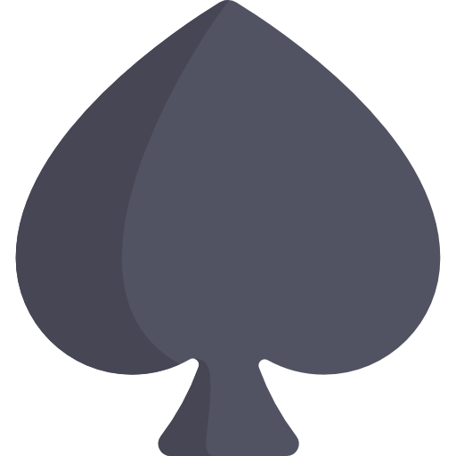

Four Unique Learning Paths
Novice
Get started on the right foot with our Novice path. We cover everything from hand ranking to casino etiquette.
Intermediate
Our Intermediate path will make you a real problem at the poker table! Heavy focus on preflop agression and continuation betting.

Advanced
Are you ready to make poker a career or lucrative hobby? Our Advanced course will give you the blueprint to do just that.

Professional
Our Professional path will take you from being a solid regular to verfied crusher any almost any publicly available live poker game, and up to high stakes online!